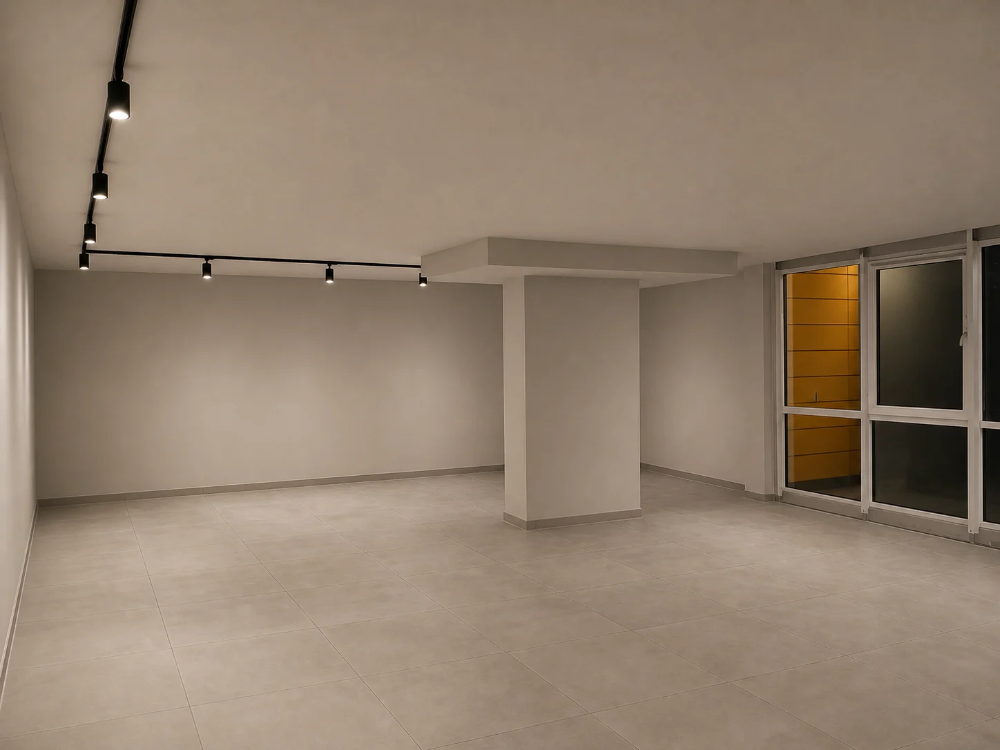
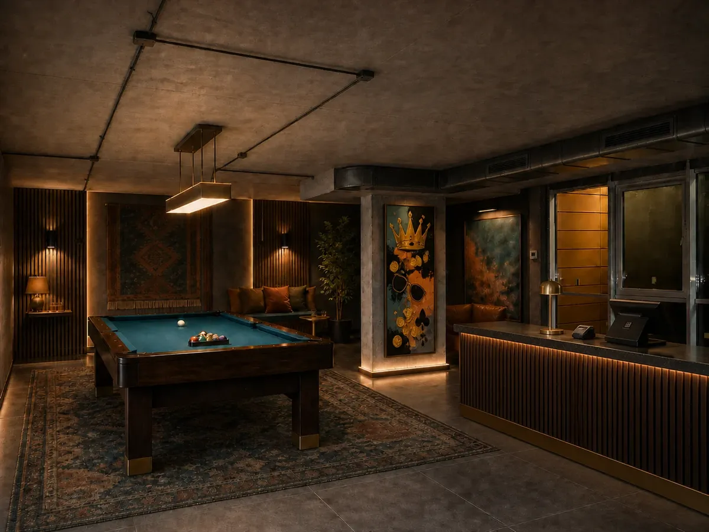
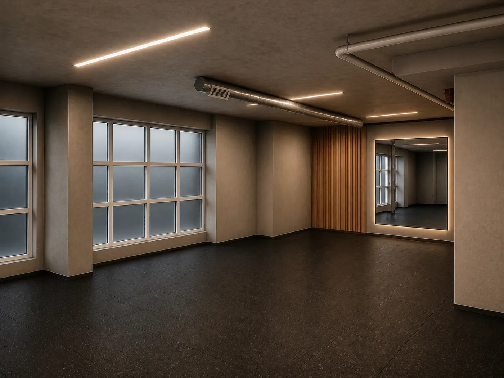
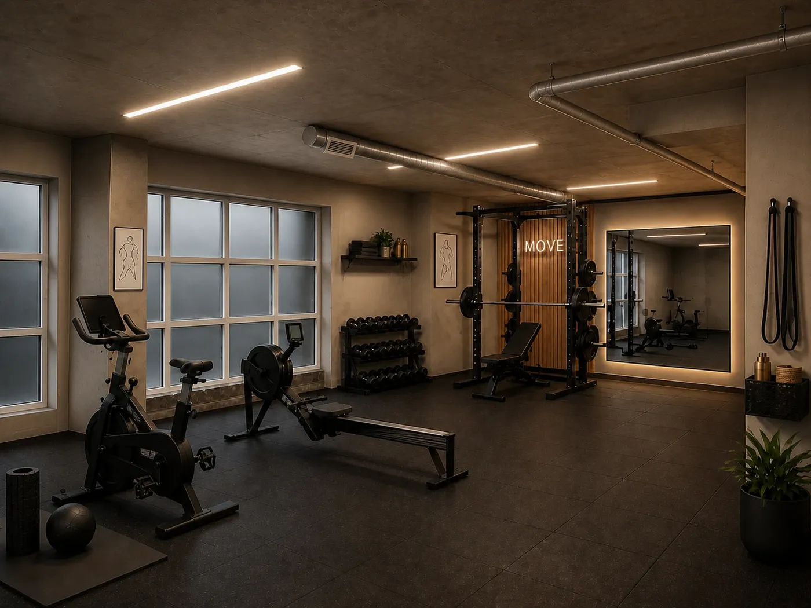
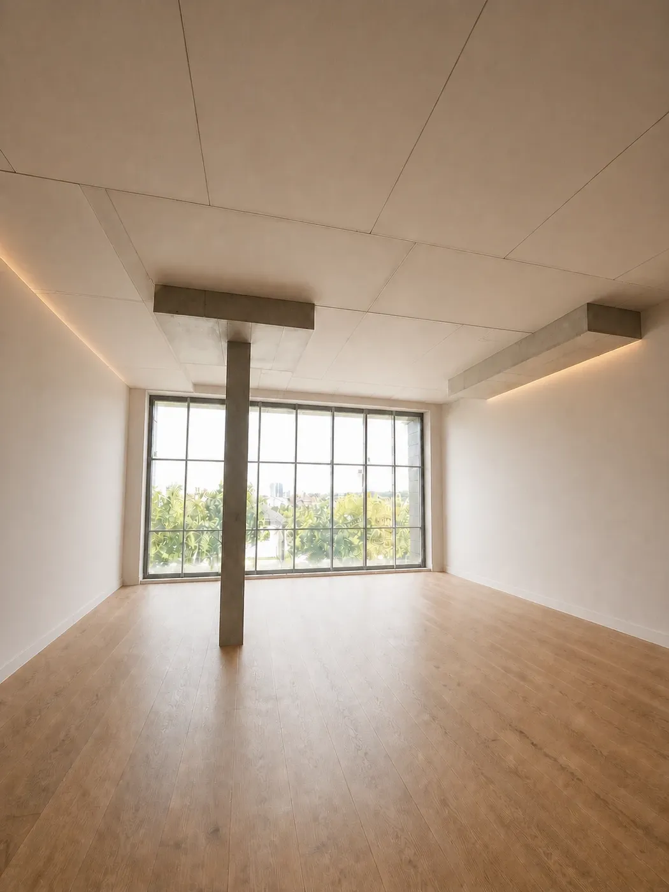
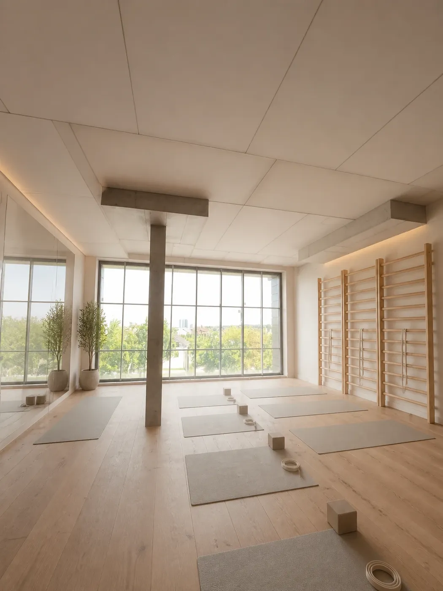
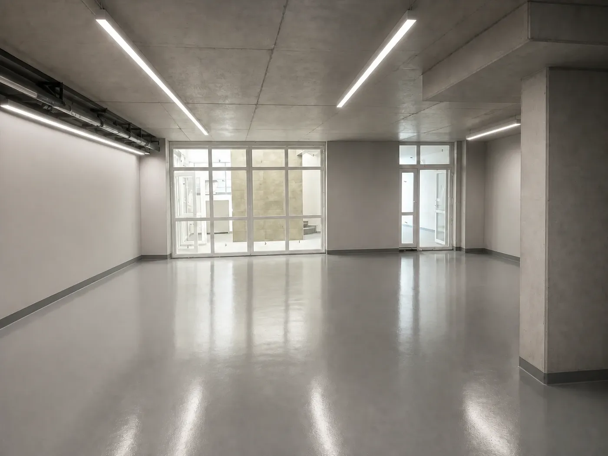
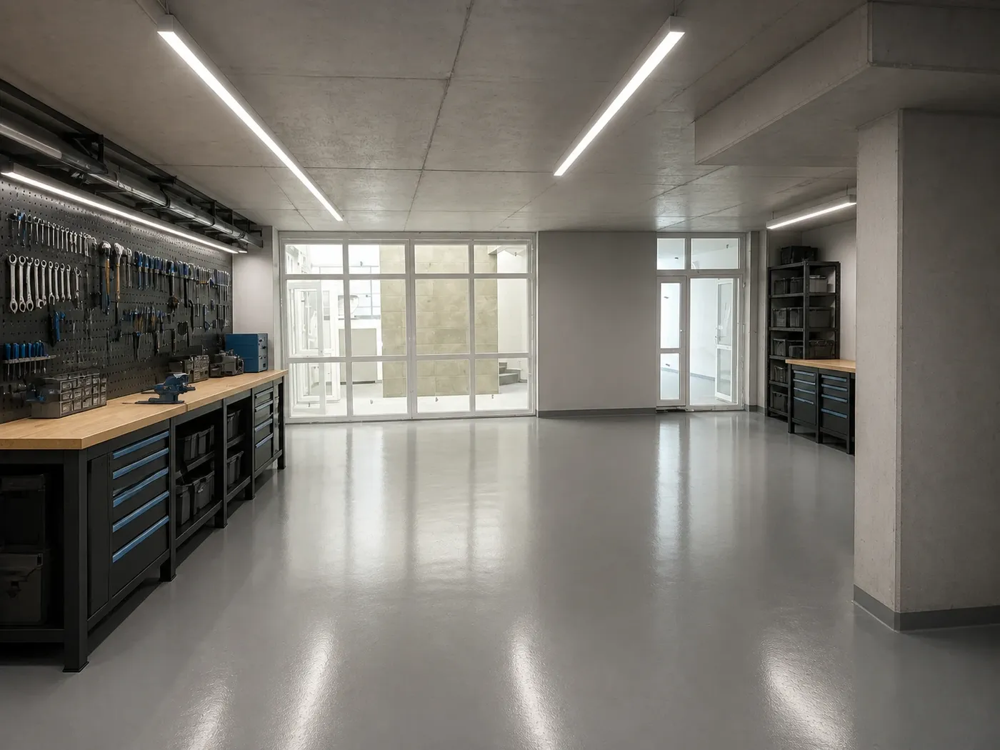

У власності компанії — 15 868 м² готових комерційних площ. Близько $8,6 млн вкладено у приміщення, які зараз не приносять доходу. Пропонуємо продати об'єкти з низьким орендним потенціалом, а привабливі для бізнесу площі залишити у власності та здавати в оренду. Першим перевіримо цей підхід на М-16 у Чабанах.
Дані: Єдиний реєстр активів + внутрішній реєстр нежитлового фонду + портальний прайс, станом на 12.08.2026. Методика розрахунку — розділ 11, повний реєстр — Додаток.
Покупцеві складно оцінити потенціал порожнього приміщення. Тому кожне показуємо трьома кадрами: реальний стан сьогодні, вайтбокс — після базового ремонту, і як у ньому може працювати бізнес. Візуалізації створюємо на базі реальних фотографій, власними силами.








Той самий ракурс, та сама колона, ті самі вікна — щоб було видно: це не «картинка з інтернету», а саме це приміщення. Візуалізації — концептуальні, не є проєктом ремонту.
«Будинок 1» ЖК Pionerskiy 2 введено в експлуатацію у 2021–2022 роках. За інвентаризацією від 26.06.2026 у ньому 31 нежитлове приміщення загальною площею 3 436 м². Вони розташовані на різних поверхах, тому мають різну цінність і потребують різних сценаріїв використання.
Найбільша частина — цоколь: 15 приміщень загальною площею 1 590 м², або близько 46 % об'єкта. Також у будинку є привабливе фасадне приміщення № 941 на першому поверсі, приміщення на 2–4 поверхах, офісний блок на третьому поверсі прибудови та підвал, придатний для комор.
Шари · секції · блокування · права
▶| Шар | Що (секції) | НП | м² | Використання |
|---|---|---|---|---|
| 1-й поверх | НП 5.7 (941), фасадне крило, секц. 5 | 1 | 113 | фасадне приміщення з високим попитом |
| Цоколь | секц. 5–8 (вулиця, 8 НП · 854 м²) + секц. 1–4 (поле/двір, 7 НП · 736 м²) | 15 | 1 590 | послуги / склад / торгівля |
| Поверхи 2–4 | секц. 4 (948, 966, 980) · секц. 5 (953, 981) | 5 | 579 | апартаменти або офіси |
| Прибудова, 3 пов. | 964 · 967 · 968 · 970 · 971 — офісний блок | 5 | 558 | офіс / коворкінг |
| Підвал прибудови | 915 · 916 · 917 · 918 | 4 | 494 | комори / склад |
| Продано | 947 (розстрочка) | 1 | 104 | поза периметром |
Цоколь — єдиний об'єм без перегородок, 94–122 м², вхід внутрішніми сходами, вікна цокольного рівня; крила 5–8 (вулиця) і 1–4 (поле/двір) різняться орієнтацією. Частина приміщень (858, 866, 1036, 1037) зарезервована для взаєморозрахунків щодо М-18, а приміщення № 1039 планують поділити на комори. Їх можна буде продавати або здавати в оренду після зняття цих обмежень. Фонд оформлено переважно на майнові права.
Для кожної частини будинку заздалегідь визначаємо основний сценарій. Остаточне рішення — оренда чи продаж — ухвалюємо з урахуванням конкретної пропозиції клієнта.
| Блок | Що входить (поверхи / секції) | м² | Сценарій |
|---|---|---|---|
| Крило 5–8 · вулиця | 1-й пов. (941) + цоколь 5–8 (8 НП) + поверхи 2–4 секц. 5 (953, 981) | 1 202 | оренда або продаж залежно від пропозиції клієнта |
| Крило 1–4 · поле/двір | цоколь 1–4 (7 НП) + поверхи 2–4 секц. 4 (948, 966, 980) | 1 079 | оренда або продаж залежно від пропозиції клієнта |
| Прибудова | 3-й пов. офіси (964–971) + підвал-комори (915–918) | 1 051 | тільки оренда |
Ці приміщення можуть забезпечити стабільний орендний дохід. Цоколь у секціях 5–8 пропонуємо аптекам, кав'ярням, салонам, студіям та операторам поштових відділень. Перед запуском разом із проєктувальником перевіряємо можливість облаштування окремих входів.
Основний сценарій — продаж без ремонту, щоб швидше повернути вкладені кошти. Альтернатива — оренда під склад, репетиційні приміщення або легке виробництво, якщо з'явиться відповідний клієнт.
Можливі оренда, продаж або переведення у житловий фонд. До зміни юридичного статусу використовувати ці приміщення як житло не можна.
Ми пройшлися по реальних точках навколо будинку (Google Maps, серпень 2026). Висновок: теза «в ЖК немає спортзалу, ресторану і клініки» застаріла — поруч уже працюють і фітнес, і клініки. Тому шукаємо орендарів насамперед у вільних нішах, а в насичені формати заходимо лише з помітною відмінністю.
Кого саджаємо · прив'язка до секцій · довідник «клієнт → приміщення»
▶Терміни: зовнішній контур — сторона назовні (для секцій 5–8 це вул. Машинобудівників, для 1–4 — польова сторона); внутрішній контур — сторона у двір без авто. Точну прив'язку кожного приміщення до контуру додамо за планом М-16.
Приміщення: НП 5.7 (941), 6.2, 6.3, 7.1, 7.3, 8.2 (+ закриті 8.1, 8.3, 8.5). Кандидати: банк · ресторан/гастробар · оптика · зоомагазин · пекарня — вільні ніші, шукаємо першими; аптека, міні-маркет, пункт видачі, великий салон краси, кав'ярня — поруч уже є, беремо лише з відмінністю; також квіти, державні сервіси.
Кандидати: приватний садок і дитячі гуртки · кабінет психолога/логопеда · ремонт речей (взуття, ключі, одяг) · кава з собою — вільні ніші; барбершоп, перукарня, манікюр, масаж, дитячі танці й малювання, йога, стоматкабінет — поруч є аналоги.
Приміщення: НП 1.3, 2.2, 3.3, 3.4, 4.3 (+ закриті 1.1, 1.4). Кандидати: офіс-представництво, шоурум, склад-магазин із видачею, легкий сервіс (ремонт техніки, ательє), навчальний центр або коворкінг — ніша, страхова/юридична/бухгалтерська контора, державні структури.
Приміщення: НП 17.1, 17.2, 17.3, 18.1, 18.3 (68–160 м², можна об'єднувати до 500 м²+). Кандидати: навчальний або мовний центр · коворкінг · дитячий ігровий центр · банк-офіс — вільні ніші; спортзал — лише нішевий (кросфіт, бокс, жіночий, дитячий: поруч уже Grafit і OxyDan); медцентр вузького профілю (діагностика, реабілітація, косметологія); танцювальна/йога-студія, фотостудія, б'юті-коворкінг.
≈ 494 м², дробиться на комори. Кандидати: індивідуальні комори мешканцям, склад орендаря з вулиці, архів, майстерня, сезонне зберігання (шини, велосипеди). Комори в оренді дають більше за м², ніж цілий склад — модель НП 8.3 тиражуємо на весь підвал.
Приміщення: НП 4.8, 4.9, 4.10, 5.8, 5.10. Кандидати: офіс, навчальний центр, тихі кабінети, IT і бек-офіс.
| Клієнт / формат | Куди | Чому |
|---|---|---|
| Спортзал / спортклуб | Прибудова, 3-й пов. (висота 4 м) або блок цоколя | поруч Grafit і OxyDan — беремо лише нішевий формат |
| Великий салон краси | Зовнішній контур, секції 5–8 | вітрина і потік; конкуренти поруч — потрібна відмінність |
| Барбершоп / перукарня | Внутрішній контур, двір | сервіс «біля дому» |
| Продукти, аптека, кав'ярня | Зовнішній контур, секції 5–8 | якорі потоку; аналоги вже є |
| Клініка / медцентр | Прибудова (блок) або цоколь на вулицю | базові послуги поруч є — заходимо вузьким профілем |
| Дитячий центр, гуртки | Двір або прибудова | поруч майданчики, сімейний трафік |
| Офіс | Верхні поверхи 4/5 або тил 1–4 | тихо, вітрина не потрібна |
| Пункт видачі посилок | Зовнішній контур; частково двір | потрібен окремий вхід і паркувальна кишеня |
| Склад / індивідуальні комори | Підвал | дробиться, попит мешканців |
| Ресторан / кафе | Зовнішній контур (кут або прибудова) | ресторану в ЖК немає; потрібні вітрина і витяжка |
Джерела: реальні точки на Google Maps / 2GIS навколо ЖК Pionerskiy 2 (серпень 2026) + інфраструктурний перелік забудовника. Це орієнтир для підбору орендарів і покупців, а не гарантія попиту.
Попередні дані по Чабанах · ціни ще уточнюємо
▶| Тип приміщення | Продаж без ремонту | Примітка |
|---|---|---|
| 1-й поверх, фасадне крило (941) | верхній діапазон | найпривабливіший формат, показуємо першим |
| Цоколь | ≈ $470–560/м² | вища ціна для секцій 5–8 після облаштування окремого входу |
| Поверхи 2–4 | орієнтир для офісів / апартаментів | потрібно оновити аналіз аналогів |
| Комори / підвал | $700–1 020/м² | за комірку малого метражу |
Оформлене право власності може підвищити ціну приблизно на 25 % порівняно з продажем майнових прав. Орендні ставки затвердимо після аналізу актуальних пропозицій у Чабанах: дані по Вишневому для М-16 не підходять. Орієнтовна оцінка об'єкта становить $2,0–2,5 млн; реалістичну ціну перевіримо за реакцією на тестові оголошення.
Ми знайшли оголошення сторонніх брокерів про продаж приміщень у М-16. В обліку компанії проданим зазначено лише приміщення № 947, тому потрібно перевірити, на якій підставі брокери рекламують інші об'єкти. Це створює ризик неконтрольованих цін і втрати звернень.
| Продавець | Що продає | Ціна | Публікується | Статус |
|---|---|---|---|---|
| Віталій брокер №1 позначений «представник забудовника» | Блок прибудови 557,8 м² (3-й пов.), пропонує дробити весь наш блок | $833/м² | з 15.01.2025 | повноваження з'ясувати |
| Олена брокер №2 посередник · вторинка | 114,4 м² — переуступка прав | — | з 27.12.2024 | повноваження з'ясувати |
| Приватні продавці / агентства | Окремі приміщення з ремонтом | різні | — | не наш фонд |
По кожному брокеру — офіційне рішення: авторизуємо на наших умовах або припиняємо повноваження і знімаємо оголошення.
Одна цінова політика: оренда ₴/м²/міс і продаж $/м² — без самодіяльності посередників. Публікація прибудови «продаж $833/м²» суперечить рішенню «прибудова — оренда» — знімаємо або переорієнтовуємо.
Усі звернення щодо нежитлових приміщень спрямовуємо на один номер і в один акаунт Холдингу. За напрям відповідають окремі менеджери, які не поєднують цю роботу з продажем житла.
Збираємо в одному реєстрі всі оголошення про наші приміщення. Перевіряємо статус, площу, право власності й ціну; видаляємо дублікати та помилки; з'ясовуємо повноваження брокерів. Усі звернення переводимо на єдиний номер і закріплюємо за окремими менеджерами.
Розміщуємо оголошення на OLX, DIM.RIA, RIELTOR.UA та LUN. У назві й описі зазначаємо і назву житлового комплексу, і адресу, щоб приміщення можна було знайти за обома запитами. Усі оголошення оформлюємо в єдиному стилі та публікуємо через акаунт Холдингу. Для пріоритетних об'єктів додаємо відеоогляд.
Першим показуємо приміщення 941 на першому поверсі та шукаємо прямого орендаря. Фасадний цоколь 5–8 пропонуємо сервісному бізнесу після облаштування окремих входів. Цоколь 1–4 з боку двору продаємо без ремонту або здаємо під склад. Поверхи 2–4 розглядаємо як офіси чи апартаменти, прибудову — лише для оренди. За потреби базові роботи виконуємо самі або зараховуємо витрати орендаря в рахунок орендної плати.
Створюємо єдиний реєстр з актуальними даними про кожне приміщення: статус, право власності, ціна, канал просування, відповідальний і посилання на оголошення. Перед публікацією перевіряємо фото та документи за двома окремими списками.
Фото · документація — з концепції М-16, ред. 18.08
▶Фасад і вхідна група; для секцій 5–8 — місце можливого окремого входу та приямка. Далі: прив'язка до адреси й секції, 3–5 загальних кадрів приміщення, висота стелі, електрощит, потужність, вода, каналізація, вентиляція, опалення, санвузол, вид із вікна та пішохідний потік. Додаємо планування і позначку на генплані. Вимоги до фотозйомки: рівний горизонт, денне світло, єдиний стиль, щонайменше 12–15 кадрів; для пріоритетних приміщень — відеоогляд тривалістю 30–60 секунд.
Перевіряємо правовстановлювальні документи, статус права, техпаспорт, площу, поверх, висоту стелі, адресу, секцію та інженерні характеристики. Окремо фіксуємо призначення і стан приміщення — без ремонту, з будівельним оздобленням або готове; обтяження; статус оренди чи продажу; затверджену ціну; можливі роботи під потреби клієнта; контакт і комплект фото.
Повні версії обох чек-листів узгоджені з фото-ТЗ (ред. 11.08) і ТЗ картки об'єкта (ред. 12.08) — Додатки Д3 і Д4.
Розподіляємо приміщення за двома ознаками: розташуванням — фасадне чи дворове — та площею — до 100 м² або понад 100 м². Для кожної категорії визначаємо пріоритет: оренда чи продаж.
Підходить для кав'ярень, аптек і салонів. Помітний фасад, вітрина та потік людей забезпечують найвищу орендну ставку за м², тому такі приміщення доцільно залишати у власності.
Підходить для продуктових мереж, медичних закладів і дитячих центрів. Потенційним орендарям надсилаємо прямі пропозиції з урахуванням вимог кожної мережі.
Підходить для студій, кабінетів і майстерень. Такі приміщення мають широке коло потенційних покупців, а дохід від оренди не виправдовує витрат на управління, тому їх доцільно продавати.
Пропонуємо ставку близько 50 грн/м² за умови, що орендар власним коштом ремонтує приміщення. Через 2–3 роки поліпшення залишаються власнику, тож вартість активу зростає без наших капітальних витрат.
З внутрішнього реєстру · продаж і оренда · курс 44,5
▶| Категорія | Продаж | Оренда |
|---|---|---|
| Цоколь / фасадні приміщення | ~$1 150/м² 51 000 ₴ | ~$12,6/м²/міс 560 ₴ |
| Офіс / поверхи | ~$850/м² 38 000 ₴ | ~$6,3/м²/міс 280 ₴ |
| Підвал / склад | ~$500/м² 22 000 ₴ | ~$4,5/м²/міс 200 ₴ |
Ці цифри потрібні для попереднього позиціювання і не є остаточними цінами угод. Актуальні ціни окремих приміщень наведено в портальному прайсі (розділ 11). Для М-16 використовуємо окремі орієнтири по Чабанах для приміщень без ремонту (розділи 03–04). Великі дворові цоколі оцінюємо окремо: близько 50 ₴/м² на місяць за умови, що ремонт виконує орендар.
Частина приміщень має однакове планування, розташування та площу. У кожній такій групі готуємо й фотографуємо один типовий об'єкт, а матеріали використовуємо для решти з відповідною приміткою. Усього маємо 22 типові групи та 34 унікальні приміщення. Для готових будинків потрібно 36 фотозйомок.
| Вільні у готових будинках | 56 пом. · 6 807 м² |
| Вільні на стадії будівництва М-18, 5А | 42 пом. · 3 588 м² |
| В оренді (діючі договори) | 17 пом. · 2 131 м² |
| Майнові права, не власність | 97 пом. · 10 209 м² |
| Без вікон (цоколі/підвали) | 53 пом. |
56 фотозйомок охоплюють усі 98 вільних приміщень: 22 типові групи та 34 унікальні об'єкти
▶Типові групи: готуємо і знімаємо перше приміщення групи, решта отримує ті самі матеріали з поміткою «планування типове».
| Адреса · поверх | Метраж | Шт. | Приміщення (знімаємо перше) |
|---|---|---|---|
| Машинобудівників 16 · цоколь | 94–97 м² | 7 | НП 3.4 · 6.2 · 7.3 · 6.3 · 1.3 · 4.3 · 3.3 |
| Машинобудівників 16 · цоколь | 119–122 м² | 3 | НП 2.2 · 8.2 · 7.1 |
| Машинобудівників 16 · підвал | 124–133 м² | 3 | П.2 · П.3 · П.4 |
| Машинобудівників 16 · 3 поверх | 69 м² | 2 | НП 18.3 · 17.2 |
| Машинобудівників 16 · 3 поверх | 158–159 м² | 2 | НП 17.1 · 18.1 |
| Машинобудівників 16 · 4 поверх | 113–114 м² | 2 | НП 5.10 · 4.10 |
| Єдності 5 · цоколь | 126–132 м² | 4 | НП 13 · 16 · 17 · 18 |
| Єдності 5 · цоколь | 89–90 м² | 2 | НП 12 · 15 |
| Єдності 4 · цоколь | 69–72 м² | 2 | НП 244 · 246 |
| Молодіжна 22А · цоколь | 30 м² | 2 | НП 42 · 48 часткова власність |
| Піонерська 18 · цоколь | 90–94 м² | 2 | НП 21 · 22 |
Унікальні — знімаємо кожне окремо (25): аналогів немає, матеріали не клонуються.
| Адреса · поверх | Метраж | Шт. | Приміщення |
|---|---|---|---|
| Машинобудівників 16 · підвал | 107 м² | 1 | П.1 |
| Машинобудівників 16 · 1 поверх | 113 м² | 1 | НП 5.7 |
| Машинобудівників 16 · 2 поверх | 115 м² | 1 | НП 4.8 |
| Машинобудівників 16 · 3 поверх | 103 м² | 1 | НП 17.3 |
| Машинобудівників 16 · 3 поверх | 115 м² | 1 | НП 4.9 |
| Єдності 5 · цоколь | 138 м² | 1 | НП 14 |
| Єдності 6А · цоколь | 305 м² | 1 | НП 96 |
| Єдності 6А · — | 252 м² | 1 | НП 2 |
| Єдності 6А · — | 382 м² | 1 | НП «підпілля» |
| Молодіжна 22 · цоколь | 22 м² | 1 | НП 21-4 |
| Молодіжна 22 · цоколь | 30 м² | 1 | НП 21-5 |
| Молодіжна 22А · цоколь | 22 м² | 1 | НП 47 часткова власність |
| Молодіжна 22А · цоколь | 38 м² | 1 | НП 51 часткова власність |
| Молодіжна 32 · цоколь | 73 м² | 1 | НП 138 |
| Молодіжна 32 · цоколь | 126 м² | 1 | НП 123 |
| Молодіжна 32 · цоколь | 202 м² | 1 | НП 124 |
| Молодіжна 32А · цоколь | 147 м² | 1 | НП 160(а) |
| Молодіжна 32А · — | 93 м² | 1 | НП 184 |
| Молодіжна 32А · — | 299 м² | 1 | НП 163 |
| Першотравнева 21А · цоколь | 200 м² | 1 | НП 42 часткова власність |
| Першотравнева 23 · цоколь | 130 м² | 1 | НП 127 |
| Піонерська 20 · — | 308 м² | 1 | НП №52/53 |
| Піонерська 28 · 1 поверх | 47 м² | 1 | Приміщення 42/1 |
| Гостомель, Свято-Покровська 73-Г · 1 поверх | 170 м² | 1 | НП 166/224 |
| Гостомель, Свято-Покровська 73-Г · — | 93 м² | 1 | НП 172/008 |
| Адреса · поверх | Метраж | Шт. | Приміщення (знімаємо перше) |
|---|---|---|---|
| Машинобудівників 18 · 1 поверх | 85–92 м² | 7 | НП 10.2 · 4.5 · 9.6 · 9.5 · 10.3 · 10.7 · 9.1 |
| Машинобудівників 18 · 1 поверх | 64–68 м² | 5 | НП 4.9 · 9.2 · 10.4 · 7.3 · 7.7 |
| Машинобудівників 18 · 2 поверх | 32–33 м² | 2 | НП 9.8 · 4.12 |
| Машинобудівників 18 · 2 поверх | 71 м² | 2 | НП 7.9 · 7.12 |
| Машинобудівників 18 · 2 поверх | 85–87 м² | 2 | НП 9.9 · 4.11 |
| Машинобудівників 18 · 2 поверх | 99 м² | 2 | НП 7.11 · 7.10 |
| Машинобудівників 5А · 1 поверх | 66–70 м² | 3 | НП 5.1 · 6.2 · 5.4 |
| Машинобудівників 5А · 1 поверх | 80–84 м² | 3 | НП 4.3 · 5.5 · 6.3 |
| Машинобудівників 5А · 1 поверх | 94–98 м² | 3 | НП 4.4 · 1.1 · 6.1 |
| Машинобудівників 5А · 1 поверх | 118–119 м² | 2 | НП 4.2 · 5.2 |
| Машинобудівників 5А · 2 поверх | 104–106 м² | 2 | НП 6.6 · 6.7 |
Дев'ять унікальних приміщень на етапі будівництва фотографуємо окремо.
| Адреса · поверх | Метраж | Шт. | Приміщення |
|---|---|---|---|
| Машинобудівників 18 · 1 поверх | 30 м² | 1 | НП 10.6 |
| Машинобудівників 18 · цоколь | 170 м² | 1 | НП 2.4 |
| Машинобудівників 18 · цоколь | 192 м² | 1 | НП 2.1 |
| Машинобудівників 5А · 1 поверх | 49 м² | 1 | НП 5.3 |
| Машинобудівників 5А · 1 поверх | 54 м² | 1 | НП 6.4 |
| Машинобудівників 5А · 1 поверх | 145 м² | 1 | НП 4.1 |
| Машинобудівників 5А · 2 поверх | 54 м² | 1 | НП 6.8 |
| Машинобудівників 5А · 2 поверх | 61 м² | 1 | НП 6.9 |
| Машинобудівників 5А · 2 поверх | 124 м² | 1 | НП 6.5 |
| Майнові права | 97 приміщень (10 209 м²) — не право власності; 47 із них будуються. Покупцю потрібен пакет: інвестдоговір, строк введення, відповідальність за прострочення. |
| Часткова власність | 5 приміщень (Молодіжна 22А, Першотравнева 21А) — продаж лише за згодою співвласників. |
| Перейменовані вулиці | Першотравнева = Примаченко · Піонерська = Молодіжна · Дорошенка = Чорновола. У картці — обидві назви. |
Потрібна не художня фотосесія, а послідовна й точна фіксація кожного приміщення за єдиним стандартом. На київському ринку фотозйомка одного об'єкта коштує 5–7 тис ₴, тому 36 окремих замовлень обійшлися б у 180–252 тис ₴ ($4 045–5 660). Щоб зменшити витрати, групуємо типові приміщення й оплачуємо роботу фотографа за знімальний день.
Групування типових приміщень і оплата за знімальний день замість тарифу «за об'єкт» економлять до 85 % вартості тієї самої роботи. Обладнання не купуємо: підрядник повинен мати власний штатив і мобільне освітлення — це зазначено у технічному завданні. Від фотозйомки силами працівників компанії відмовляємося.
Зведення двох готових ТЗ · повні версії — у Додатку
▶| Блок | Кадри | Шт. |
|---|---|---|
| A · Контекст (раз на адресу) | Фасад, підходи, сусіди-орендарі, паркування | 6–8 |
| B · Вхідна група | Вхід, ґанок/пандус, місце вивіски, вітрини | 4–5 |
| C · Інтер'єр | Кожна кімната з двох кутів, вікна і вид з них, стеля з далекоміром, підлога | 8–14 |
| D · Техвузли | Щит, автомати, лічильники з номерами, опалення, вентиляція | 5–8 |
| E · Проблемні місця | Тріщини, протікання — окрема папка, НЕ для реклами | за фактом |
Пакет А (мінімум для оголошення, робимо по всіх вільних): адреса з обома назвами вулиці, площа, поверх, висота стелі, тип входу, вікна, потужність у кВт, стан, план, ціна, контакт. Пакет Б (для угоди, за запитом): юридичний блок, інженерія повністю, операційні витрати, податки, замір трафіку.
Клієнту ніколи не йдуть: витяг на власника цілком, договірні ціни минулих угод, наша мінімальна ціна, папка «Проблемні місця», службові помітки. Перед фотозйомкою приміщення готуємо: сміття, лампи, вікна — чек-лист у фото-ТЗ, розділ 6.
Якщо одночасно опублікувати близько 95 вільних приміщень, у покупців виникне враження надлишкової пропозиції, що послабить нашу позицію в переговорах. Тому для кожного формату публікуємо одне типове приміщення, а решту менеджер пропонує після уточнення потреб клієнта.
Старі оголошення та публікації посередників із 2022 року створюють цінову плутанину й відводять звернення від наших менеджерів. Як власник, компанія ініціює їх видалення з майданчиків і залишає один актуальний канал зв'язку.
У кожному оголошенні — AI-рендери «з меблями / без» (розділ 02) і чесні фото за стандартом. Для цоколів — аргумент безпеки: власне укриття.
Пілот М-16 · збір дзвінків · CRM
▶Пілотний об'єкт — М-16. Одночасно публікуємо оголошення про оренду та продаж двох типових форматів: цокольного приміщення і прибудови під офіс. Мета — перевірити реальний попит до інвестицій у ремонт. У CRM фіксуємо джерело кожного звернення, потрібний формат і запит клієнта. менеджер НФ веде реєстр сторонніх оголошень і звертається до майданчиків щодо їх видалення. Перший звіт готуємо через два тижні після публікації.
Вартість 67 приміщень, для яких у порталі зазначено ціну, становить близько $6,0 млн. Ще $2,6 млн — орієнтовна вартість об'єктів без затвердженого прайсу, зокрема М-5А та приміщень у Гостомелі. Якщо здати всі вільні площі за ставками з внутрішнього реєстру, потенційний орендний дохід може сягнути близько $87 тис на місяць.
Бюджет запуску ≈ $2 500 — це 0,03 % вартості замороженого фонду.
Всі суми — орієнтовні, фінальні ціни після збору пропозицій підрядників. Курс USD/UAH — 44,5. Затверджені рішення — чорний жирний. Уточнюються після тендера — сірий курсив. Долар — основна валюта, гривня — дрібним.
Розподіл рекомендованого сценарію. Порівняння трьох сценаріїв — нижче.
| Стаття | Ціна | К-сть | USD | Грн | Відп. |
|---|---|---|---|---|---|
| Вивіз сміття, Газель/ЗІЛ з вантажниками | 800–1 500 ₴/рейс | ~10 рейсів | $180–340 | 8–15 тис | керівник ПК-2 |
| Клінінг силами експлуатації базовий сценарій | — | 35 прим. | 0 | 0 | керівник ПК-2 · команда ПК-1 |
| Клінінг підрядником — лише фасадні приміщення рішення по кожному окремо | 65–140 ₴/м² | 5 приміщень ≈ 470 м² | $740–900 | 33–40 тис | керівник ПК-2 |
| Лампи для 53 приміщень без вікон викреслено 14.08 | — | — | 0 | 0 | — |
| Штатив + LED-панелі + далекомір викреслено — у підрядника своє | — | — | 0 | 0 | — |
| Підхід | Ціна | К-сть | USD | Грн | Статус |
|---|---|---|---|---|---|
| Ринковий тариф «за об'єкт» | 5–7 тис ₴/об'єкт | 36 об'єктів | $4 045–5 660 | 180–252 тис | відхилено |
| Бюджетний виконавець, оплата за день | 3–4,5 тис ₴/день | 6 днів | $400–600 | 18–27 тис | нижня межа |
| Професійний інтер'єрний фотограф, оплата за день | 6–9 тис ₴/день | 5–6 днів | $800–1 210 | 36–54 тис | рекомендуємо |
| Тестова фотозйомка обох кандидатів | — | 2 тести | 0 | умова тендера | до договору |
| Пальне й амортизація: 25 адрес у 4 містах (підготовка, фотозйомка, покази першого місяця) | ~400–500 ₴/виїзд | 20–25 виїздів | $180–270 | 8–12 тис | відп. блоків |
| Стаття | Ціна | К-сть | USD | Грн | Відп. |
|---|---|---|---|---|---|
| Пакети OLX/DIM.RIA + просування типових приміщень затверджено | 4–6 тис ₴/міс | 3 міс | $270–400 | 12–18 тис | менеджер НФ |
| Банери «ОРЕНДА / ПРОДАЖ» на фасади затверджено | 1,2–1,8 тис ₴/шт | ~10 шт | $270–400 | 12–18 тис | менеджер НФ |
| Непередбачене: повторні виїзди, брак, доплата за складні об'єкти | 15 % від прийнятих статей | — | $200–530 | 9–24 тис | — |
| Мінімум | Рекомендовано | Максимум | |
|---|---|---|---|
| Фотозйомка | бюджетний виконавець | профі-інтер'єрник | профі-інтер'єрник |
| Клінінг | своїми силами | своїми силами | + підрядник, 5 фасадних |
| Реклама | OLX/DIM.RIA + банери — в усіх сценаріях (затверджено) | ||
| Разом із резервом | ≈ $1 500 67 тис ₴ | ≈ $2 500 112 тис ₴ | ≈ $4 050 181 тис ₴ |
| Стаття | Ціна | Коли | USD | Грн | Відп. |
|---|---|---|---|---|---|
| Експертна оцінка для нотаріуса | від 1 200 ₴ | перед угодою | $27–56 | 1,2–2,5 тис | юристка |
| Актуальні витяги, довідки | 500–1 000 ₴ | перед угодою | $11–22 | 0,5–1 тис | юристка |
| Техпаспорт, де відсутній ~36 % фонду | 1 500–2 500 ₴ | строк ~5 днів | $34–56 | 1,5–2,5 тис | юристка |
Постатейна розбивка з джерелами київських цін — Додаток Д7. Поза кошторисом запуску: вартість облаштування окремих входів у цоколь 5–8 М-16 і базового ремонту «під клієнта» — окреме рішення після висновку проєктувальника (Етап 1а, рішення 5).
Звідки цифри · розбіжність оцінок · курс
▶Методика: для кожного вільного приміщення ціна = ставка портального прайсу (₴/м²) × площа реєстру; де прайсу немає — категорійний орієнтир внутрішнього реєстру (цоколь $1 150/м², поверхи $850/м², підвал $500/м²). Курс 44,5 ₴/$. Це орієнтовна вартість для рішень, не оцінка для угод.
Приклад розбіжності: орієнтовна вартість М-16 за нашою аналітикою становить близько $2,0 млн, а оцінка відділу продажу — $2,5 млн. Щоб перевірити обидві оцінки, запускаємо тестові оголошення та порівнюємо кількість і якість звернень за різних цін.
У прайсі М-18 чотири позиції виглядають завищеними і чекають підтвердження — на підсумок впливають у межах ±$0,2 млн.
Збираємо всі оголошення і брокерів по нашому фонду, звіряємо з обліковою відомістю. Виділяємо єдиний телефонний номер і канали зв'язку, закріплюємо відповідальних за нежитловий фонд.
Аналізуємо актуальні пропозиції оренди та продажу саме у Чабанах, оскільки попередні дані стосувалися Вишневого. Затверджуємо ціни, вимоги до фото й документів, шаблон картки та єдиний акаунт на майданчиках. юристка завершує типовий договір оренди з пільговим періодом на ремонт.
Разом із проєктувальником перевіряємо можливість облаштувати окремі входи і приямки з боку вулиці: враховуємо несучі конструкції, благоустрій і вимоги ДБН. Після розрахунку вартості виносимо інвестиції на окреме рішення.
Готуємо фото і картки пріоритетних приміщень: 941 на першому поверсі, цоколь 1–4 для продажу, фасадний цоколь 5–8, третій поверх прибудови та підвал. До укладення договору проводимо тестову фотозйомку, далі оплачуємо роботу за знімальний день. Усі оголошення публікуємо через єдиний канал. Паралельно проводимо 36 фотозйомок у готових будинках усього фонду.
Пріоритети: продати цоколь 1–4 з боку двору, здати фасадний цоколь 5–8 і приміщення 941, прибудову пропонувати лише в оренду. Усі звернення надходять на єдиний номер і фіксуються у CRM. У звіті показуємо кількість дзвінків, переглядів і заявок за кожним форматом та пропозиції щодо коригування цін.
Щотижневий моніторинг ринку і наших публікацій, зведений звіт органу одним листом: виконано / є ризик / потрібне рішення. Масштабування підходу на решту фонду за результатами пілота.
Шість ризиків концепції · що робимо з кожним
▶| Ризик | Захід |
|---|---|
| Несанкціонована реклама і ціни сторонніх брокерів — демпінг, репутація | Єдина цінова політика і єдиний канал; перевірка повноважень (рішення 3) |
| Майнові права / недобудова | Дисконт при продажу «як є» або оформлення права власності (+~25 % до ціни); юридичне опрацювання |
| Відсутність техдокументації та обмірів | Закладено в Етап 1; техпаспорти — по мірі угод (розділ 11) |
| Нестача виділеного ресурсу | Відповідальний + 1–2 менеджери окремо від житла (рішення 1) |
| Цоколь без окремого входу і вітрин — обмежений попит на оренду | Етап 1а: облаштування входів у 5–8 (вартість — на рішення) або складські й сервісні формати, яким вітрина не потрібна |
| Мало пропозицій у Чабанах; попередній аналіз стосувався Вишневого | Оновити аналіз орендних і продажних пропозицій у Чабанах до затвердження цін (Етап 1) |
Призначити відповідального за нежитловий фонд і 1–2 виділених менеджерів (окремо від житла); виділити єдиний телефонний номер і канали зв'язку. Пропозиція ролей: менеджер НФ — напрям НФ; керівник ПК-2 — М-16 та ПК-2; команда ПК-1 — ПК-1 і «Сакура»; юристка — договори; Алекс — система і контроль.
Затвердити єдиний реєстр як основне зведення актуальних даних по статусах, цінах і публікаціях. Перед публікацією кожне приміщення проходить чек-листи фото і документації.
По брокеру №1, брокеру №2 та інших: підтвердити або припинити повноваження; ввести єдину цінову політику і заборону несанкціонованих публікацій. Оголошення прибудови «продаж $833/м²» привести у відповідність із рішенням «прибудова — оренда».
Прибудову — офіси третього поверху та підвальні комори — пропонуємо лише в оренду. Для головного корпусу поєднуємо продаж і оренду: цоколь 1–4 з боку двору продаємо, перший поверх і фасадний цоколь 5–8 здаємо, приміщення на 2–4 поверхах пропонуємо як офіси або апартаменти. Ціни затверджуємо після оновлення аналізу ринку.
Операційний запуск: від $1 500 до $4 050 67–181 тис ₴, рекомендовано ≈ $2 500 112 тис ₴ (кошторис — розділ 11). Окремо доручити розрахунок вартості облаштування окремих входів і приямків у цоколь 5–8 та базового ремонту «під клієнта» — рішення після висновку проєктувальника.
Затвердити перелік майданчиків (OLX, DIM.RIA, RIELTOR.UA, LUN) і єдиний стандарт публікації: картка, фото за ТЗ, документація, просування під назвою ЖК і за адресою.
Стратегія вище — це «що і чому». Нижче — «хто, коли і за скільки»: графік Ганта по тижнях, план по днях, спринт-дошка першого спринту. Все з датами, відповідальними і бюджетами.
19 серпня — 31 серпня · відповідальний і бюджет на кожен день
▶| День | Що відбувається | Відповідальний | Бюджет |
|---|---|---|---|
| Ср 19.08день 1 | Підписання наказів НФ-1…НФ-4 (розділ 17). Алекс передає виконавцям фото-ТЗ, чек-листи підготовки і шаблон картки — особисто, під підпис | П. Л. · Алекс | — |
| Чт 20.08день 2 | Єдиний номер НФ (SIM + переадресація) і месенджери. Поділ бази на блоки: ПК-2/М-16 → керівник ПК-2, ПК-1 + Сакура → команда ПК-1. Офіційні листи обом зовнішнім брокерам — запит підстав публікацій | менеджер НФ · Алекс · аналітик | $5 200 ₴ SIM |
| Пт 21.08день 3 | Обхід М-16: усі 15 цокольних НП + прибудова. Фіксуємо: обсяг сміття по кожному, дефекти, ключі й доступи. Реєстр сторонніх оголошень зведено (посилання, ціни, дати) | керівник ПК-2 · менеджер НФ | $0 |
| Пн 24.08день 4 | Рішення по брокерах на підставі відповідей: авторизуємо на наших умовах або знімаємо оголошення. Початок аналізу актуальних пропозицій оренди та продажу в Чабанах (окремо по цоколях) | аналітик + П. Л. · менеджер НФ | $0 |
| Вт 25.08день 5 | Тендер фотографів: 3 кандидати з портфоліо комерційних інтер'єрів. Заявка проєктувальнику: врізання входів/приямків у цоколь 5–8 (несучі, благоустрій, ДБН) | менеджер НФ · керівник ПК-2 | $0 |
| Ср 26.08день 6 | Вивіз сміття М-16: рейси 1–3 (Газель/ЗІЛ з вантажниками). юристка фіналізує типовий договір оренди: ремонтні канікули, невіддільні поліпшення | керівник ПК-2 · юристка | $55–100 2,5–4,5 тис ₴ |
| Чт 27.08день 7 | Вивіз сміття: рейси 4–6. Клінінг фасадних приміщень (941 + 2 цоколі 5–8) — своїми силами або підрядник, рішення по кожному окремо. Тестова фотозйомка кандидата А: цоколь М-16 | керівник ПК-2 · менеджер НФ | $55–400 сміття + клінінг |
| Пт 28.08день 8 | Тестова фотозйомка кандидата Б (той самий цоколь — порівнюємо чесно). Розбір результатів двох тестів за чек-листом приймання | менеджер НФ + керівник ПК-2 | $0 умова тендера |
| Пн 31.08день 9 | Вибір підрядника, договір, графік фотозйомок по днях. Аналіз ринку Чабанів завершено → проєкт цінової політики на затвердження П. Л. Спринт 1 закрито | менеджер НФ | аванс за домовл. |
| Вт–Пт 01–04.09 | Фотозйомка: день 1 — 941 + цоколь 5–8; день 2 — цоколь 1–4 + прибудова + підвал; дні 3–4 — готові вільні ПК-1 і Сакури (за типізацією, розділ 08) | підрядник + керівник ПК-2 · команда ПК-1 | $400–1 210 18–54 тис ₴ |
| Пн–Ср 07–09.09 | Обробка фото. Картки «Пакет А» по відзнятих. AI-візуалізації: 941 і типовий цоколь — «з меблями / без» (кав'ярня, зал, офіс) | Підрядник · менеджер НФ · Алекс | $0 |
| Чт 10.09 | Вітрина М-16 відкрита: 941 (оренда) + типовий цоколь 5–8 (оренда) + типовий цоколь 1–4 (продаж) + прибудова (оренда) — під єдиним номером на OLX, DIM.RIA, RIELTOR.UA, LUN | менеджер НФ | $90–130 пакети, 1-й міс |
| Пт 11.09 | Монтаж банерів «ОРЕНДА / ПРОДАЖ» з єдиним номером на фасади М-16 (941 + торці цоколя) | менеджер НФ + керівник ПК-2 | $270–400 12–18 тис ₴ |
| Пн 14.09 → | Щоденно: дзвінки на єдиний номер → CRM (джерело, формат, запит) → покази за графіком менеджерів | менеджери блоків | $0 |
| Ср 24.09 | Публікація оголошень ПК-1 і Сакури: типові приміщення за тим самим стандартом | менеджер НФ · команда ПК-1 | у пакетах |
| Пт 25.09 | Звіт №1 для П. Л.: дзвінки / покази / заявки по форматах М-16 + перші висновки по цінах | менеджер НФ | — |
| Пт 02.10 | Висновок проєктувальника: врізання входів у 5–8 — технічна можливість + кошторис робіт → окреме рішення П. Л. | керівник ПК-2 | вартість проєкту — за КП |
| Пт 09.10 | Звіт №2: два тижні повних публікацій; рекомендації щодо цін і форматів; план другої хвилі (повторна фотозйомка, Гостомель, будинки, що будуються) | менеджер НФ + Алекс | — |
Дошку ведемо у внутрішньому реєстрі; щопонеділка — перегляд спринту, щоп'ятниці — зведення для П. Л. одним листом: виконано / ризик / потрібне рішення.
Кожен пункт — конкретна задача з датою. Це і є персональні плани на вісім тижнів: їх закріплює наказ НФ-1.
| 20.08 | Єдиний телефон + канали звʼязку | $5 |
| 21.08 | Реєстр сторонніх оголошень зведено | $0 |
| 25.08 | Тендер: 3 кандидати-фотографи | $0 |
| 27–28.08 | Дві тестові фотозйомки, розбір за чек-листом | $0 |
| 31.08 | Аналіз ринку Чабанів → проєкт цінової політики; договір з фотографом | $0 |
| 07–09.09 | Картки «Пакет А» по відзнятих | $0 |
| 10–11.09 | Вітрина М-16 + банери | $360–530 |
| 25.09 · 09.10 | Звіти №1 і №2 для П. Л. | — |
| 21.08 | Обхід 15 цокольних НП + прибудови: сміття, дефекти, ключі | $0 |
| 25.08 | Заявка проєктувальнику: входи/приямки 5–8 | $0 |
| 26–27.08 | Вивіз сміття: ~6 рейсів з вантажниками | $110–200 |
| 27–28.08 | Клінінг фасадних приміщень (рішення по кожному) | $0–540 |
| 01–02.09 | Супровід фотозйомки М-16: доступи, розблокування | $0 |
| 11.09 | Монтаж банерів на фасади М-16 | у кошторисі |
| 02.10 | Висновок проєктувальника + кошторис облаштування входів | за КП |
| 22.08 | Прийняти файли своїх блоків, звірити з відомістю | $0 |
| 28.08 | Підготовка готових вільних ПК-1/Сакури до фотозйомки | $70–140 |
| 03–04.09 | Супровід фотозйомки своїх блоків (за типізацією) | $0 |
| 24.09 | Вітрина ПК-1 + Сакура відкрита | у пакетах |
| жовтень | Замір трафіку 15 ключових точок (2×15 хв) | $0 |
| 20.08 | Офіційні листи брокеру №1 та брокеру №2: запит підстав | $0 |
| 24.08 | Рішення по кожному брокеру (з П. Л.): авторизувати чи зняти | $0 |
| 29.08 | Зняття/переорієнтація оголошення прибудови ($833/м² → оренда) | $0 |
| вересень | Прямі пропозиції мережам щодо фасадних приміщень 100+ м² | $0 |
| 26.08 | Типовий договір оренди: канікули, невіддільні поліпшення, індексація | $0 |
| 05.09 | Пакет по майнових правах: інвестдоговір, строки, відповідальність | $0 |
| 12.09 | План по часткових власностях (Молодіжна 22А, Першотравнева 21А) | $0 |
| по угодах | Оцінка + витяги + техпаспорти | $70–135/об'єкт |
| 19.08 | Передати ТЗ, чек-листи, шаблон картки виконавцям | $0 |
| 20.08 | Поділ бази на блоки, передача під підпис | $0 |
| 07–09.09 | AI-візуалізації: 941 + типовий цоколь, «з меблями / без» | $0 |
| щопʼятниці | Зведення для П. Л. одним листом: виконано / ризик / рішення | $0 |
Головний конвеєр пілота — від підпису до дзвінків. Якщо ламається ланка — зсувається все, що праворуч від неї.
Що має бути готово, щоб крок відбувся · хто забезпечує
▶| Крок | Без чого не відбудеться | Забезпечує |
|---|---|---|
| Фотозйомка | Вивезене сміття · чисті вікна і підлога · доступ і ключі до кожного НП · розблоковані «закриті» приміщення або виключення їх із графіка · супровід менеджера на об'єкті | керівник ПК-2 · команда ПК-1 |
| Вивіз сміття | Обхід з обсягами по кожному НП · замовлені рейси з вантажниками · бюджет $110–340 підтверджений (наказ НФ-2) | керівник ПК-2 |
| Картка «Пакет А» | Фото за ТЗ · обміри (площа, висота) · потужність кВт · статус права · ціна за затвердженою політикою | менеджер НФ · юристка |
| Ціна в оголошенні | Завершений аналіз пропозицій у Чабанах · затверджена цінова політика (після 31.08) · рішення «оренда чи продаж» по приміщенню за моделлю крил | менеджер НФ · П. Л. |
| Публікація | Картка + фото + AI-рендер · єдиний номер працює · акаунт Холдингу на 4 майданчиках · зняті конфліктні оголошення брокерів | менеджер НФ · аналітик |
| Банери | Макет із єдиним номером · друк 165–300 ₴/м² · монтажник + дозвіл на фасад | менеджер НФ · керівник ПК-2 |
| Покази | Графік менеджерів (включно з вихідними) · ліхтар/подовжувач для темних цоколів · скрипт «показати аналоги» з типової групи | менеджери блоків |
| Оренда 5–8 як сервіс | Висновок проєктувальника по входах (02.10) · рішення П. Л. щодо вартості робіт · до того — формати без вітрини | керівник ПК-2 → П. Л. |
На М-16 перевіряємо повний процес роботи: огляд приміщень, підготовку, фотозйомку, створення оголошень, публікацію та аналіз результатів. Після пілота застосовуємо цей процес до інших об'єктів. Нижче наведено заплановані дати запуску.
24 вільних · 3 436 м² фонду. Вітрина 10.09, звіт №1 — 25.09. Весь цей документ — про нього.
18 вільних приміщень. Фотофотозйомка 01–04.09 (за типовими групами), оголошення — 24.09. Відповідальні: команда ПК-1.
12 вільних приміщень. Фотофотозйомка 03–04.09, оголошення — 24.09 разом із ПК-1. Цоколі Єдності 5 — типова група ×4.
2 вільних + 2 закритих. Огляд і фотозйомка — початок жовтня, оголошення — до 09.10 (у звіт №2).
42 вільні приміщення, на які оформлено майнові права. У вересні фотографуємо будинки, фасади та види з вікон. Для продажу використовуємо плани й концептуальні AI-візуалізації. юристка готує комплект документів для покупців до 5 вересня.
17 діючих договорів. Чинні оголошення не змінюємо. До кінця жовтня готуємо зведення щодо кожного договору: орендна ставка, строк, порядок індексації та стан розрахунків.
Після звіту №2 (09.10) — рішення про хвилю 2: повторна фотозйомка аматорських фото, 360°-тури ключових об'єктів, замір трафіку. Кожен блок отримує той самий пакет документів: ТЗ, чек-листи, шаблон картки.
Щоб усе описане запрацювало, потрібні чотири підписи: люди та обов'язки · гроші · ціни і посередники · стандарт публікації. Кожен наказ — готовий проєкт формату А4: друкуємо, підписуємо, ознайомлюємо.
| Наказ | Що затверджує | Яких рішень стосується |
|---|---|---|
| НФ-1 · Відповідальні | Відповідальних, обов'язки, єдиний канал зв'язку, строки | № 1, 2 |
| НФ-2 · Бюджет | Бюджет запуску, ліміти, порядок оплат | № 5 |
| НФ-3 · Ціни і посередники | Єдину цінову політику, роботу з брокерами | № 3, 4 |
| НФ-4 · Стандарт публікації | Майданчики, картки, єдиний реєстр | № 2, 6 |
З метою ефективного використання нежитлових приміщень Групи та на виконання Стратегії від 18.08.2026 —
З метою підготовки приміщень до продажу та оренди —
У зв'язку з виявленням несанкціонованих публікацій про продаж приміщень Групи (реєстр — Додаток Д8 Стратегії) —
Для єдиного інформаційного поля та контролю статусів —
Назви юросіб, ПІБ і посади підставляємо перед друком. Кожен наказ друкується окремим аркушем А4 (при друку цієї сторінки — розриви вже налаштовані).
У розділах нижче наведено повний план робіт, типові групи приміщень, вимоги до фотозйомки та реєстр адрес.
Завдання · відповідальний · строк · бюджет
▶| Задача | Відповідальний | Дедлайн | Бюджет |
|---|---|---|---|
| Затвердити концепцію, ролі, бюджет (підпис на цьому документі) | П. Л. | 18.08 | — |
| Реєстр чужих оголошень (майданчик, ціна, контакт) і деактивація | аналітик + менеджер НФ | 22.08 | $0 |
| Поділ бази на 4 файли (ПК-1, Сакура, ПК-2, Інше) за інвентаризаційною відомістю; передати особисто | Алекс | 20.08 | $0 |
| Передати виконавцям фото-ТЗ і чек-лист підготовки приміщень | Алекс | 19.08 | $0 |
| Типовий договір оренди: ремонтні канікули, невіддільні поліпшення — наші, індексація, штрафи | юристка | 22.08 | $0 |
| Категорія «не для продажу» в 1С (техкомори, провайдерські) — відділити від ринкових приміщень | ІТ / 1С | 29.08 | $0 |
| Задача | Відповідальний | Дедлайн | Бюджет |
|---|---|---|---|
| Вивіз сміття з приміщень хвилі 1 (~10 рейсів Газель/ЗІЛ з вантажниками й утилізацією) | керівник ПК-2 · команда ПК-1 | 29.08 | $250–350 11–15 тис ₴ |
| Клінінг: базово силами експлуатації ($0); платний підрядник — лише 5 фасадних приміщень (65–140 ₴/м²), рішення по кожному окремо | керівник ПК-2 + команда ПК-1 | 29.08 | $0–900 0–40 тис ₴ |
| Відбір підрядника: портфоліо з комерційних інтер'єрів, свій штатив і світло | менеджер НФ | 26.08 | $0 |
| Тестова фотозйомка одного цоколя (Єдності 5 або Молодіжна 32) — до договору | менеджер НФ + підрядник | 28.08 | безкоштовно, умова тендера |
| Тестові оголошення М-16: цоколь + прибудова, оренда і продаж — збір дзвінків | керівник ПК-2 | 27.08 | $0–50 просування |
| Задача | Відповідальний | Дедлайн | Бюджет |
|---|---|---|---|
| Фотозйомка 36 типових представників та унікальних приміщень у готових будинках за фото-ТЗ; приймання за чек-листом; оплата за знімальний день | Підрядник + відп. блоків | 12.09 | $400–1 210 18–54 тис ₴ |
| Логістика хвилі 1: пальне й амортизація, 25 адрес у 4 містах, ~20–25 виїздів | відп. блоків | вер. | $180–270 8–12 тис ₴ |
| Банери «ОРЕНДА / ПРОДАЖ» із номером на фасади ключових об'єктів (друк + люверси + монтаж) | менеджер НФ | 17.09 | $270–400 12–18 тис ₴ |
| Пакети майданчиків OLX/DIM.RIA + просування типових приміщень, 3 місяці | менеджер НФ | вер.–лист. | $270–400 12–18 тис ₴ |
| Картки «Пакет А» на всі вільні: обидві назви вулиці, метраж, висота, вхід, кВт, стан, план, ціна | менеджер НФ + Алекс | 19.09 | $0 |
| AI-візуалізації типових форматів: кав'ярня / зал / офіс, «з меблями / без» | Алекс | 12.09 | $0 нейромережі |
| Публікація по одному типовому приміщенню на формат; скрипт менеджера «показати аналоги» | менеджер НФ | 17.09 | $0 |
| Звіт П. Л. №1: дзвінки / покази / заявки по форматах + рекомендація по цінах | менеджер НФ | 26.09 | — |
| Задача | Відповідальний | Дедлайн | Бюджет |
|---|---|---|---|
| Хвиля 2: повторна фотозйомка приміщень з аматорськими фото — за результатами перших оголошень | менеджер НФ | жовт. | за фактом |
| Замір пішохідного трафіку по 15 ключових точках (2×15 хв, будній день) | менеджери блоків | жовт. | $0 |
| Паспорти договорів по 17 орендованих (ставка, строк, індексація, дисципліна) | юристка + менеджер НФ | жовт. | $0 |
| Пакет Б (юридичний + інженерія) — лише по об'єктах з реальним інтересом | за запитом | — | $0 |
Контроль: щотижня надсилаємо П. Л. один зведений лист із трьома блоками — виконано, є ризик прострочення, потрібне рішення. На ухвалення кожного рішення відводимо 1–2 дні.
22 групи · 64 приміщення · знімаємо по одному з кожної
▶До однієї типової групи належать приміщення за однією адресою та на одному поверсі, площа яких відрізняється не більш ніж на 8 %. Перше приміщення у списку повністю готуємо й фотографуємо. Для решти використовуємо ті самі матеріали з приміткою «типове планування».
| Адреса · поверх | Метраж | Шт. | Приміщення (представник — перший) |
|---|---|---|---|
| Машинобудівників 16 · цоколь | 94–97 м² | 7 | НП 3.4 · 6.2 · 7.3 · 6.3 · 1.3 · 4.3 · 3.3 |
| Машинобудівників 16 · цоколь | 119–122 м² | 3 | НП 2.2 · 8.2 · 7.1 |
| Машинобудівників 16 · підвал | 124–133 м² | 3 | П.2 · П.3 · П.4 |
| Машинобудівників 16 · 3 поверх | 69 м² | 2 | НП 18.3 · 17.2 |
| Машинобудівників 16 · 3 поверх | 158–159 м² | 2 | НП 17.1 · 18.1 |
| Машинобудівників 16 · 4 поверх | 113–114 м² | 2 | НП 5.10 · 4.10 |
| Єдності 5 · цоколь | 126–132 м² | 4 | НП 13 · 16 · 17 · 18 |
| Єдності 5 · цоколь | 89–90 м² | 2 | НП 12 · 15 |
| Єдності 4 · цоколь | 69–72 м² | 2 | НП 244 · 246 |
| Молодіжна 22А · цоколь | 30 м² | 2 | НП 42 · 48 часткова власність |
| Піонерська 18 · цоколь | 90–94 м² | 2 | НП 21 · 22 |
| Адреса · поверх | Метраж | Шт. | Приміщення |
|---|---|---|---|
| Машинобудівників 18 · 1 поверх | 85–92 м² | 7 | НП 10.2 · 4.5 · 9.6 · 9.5 · 10.3 · 10.7 · 9.1 |
| Машинобудівників 18 · 1 поверх | 64–68 м² | 5 | НП 4.9 · 9.2 · 10.4 · 7.3 · 7.7 |
| Машинобудівників 18 · 2 поверх | 32–33 м² | 2 | НП 9.8 · 4.12 |
| Машинобудівників 18 · 2 поверх | 71 м² | 2 | НП 7.9 · 7.12 |
| Машинобудівників 18 · 2 поверх | 85–87 м² | 2 | НП 9.9 · 4.11 |
| Машинобудівників 18 · 2 поверх | 99 м² | 2 | НП 7.11 · 7.10 |
| Машинобудівників 5А · 1 поверх | 66–70 м² | 3 | НП 5.1 · 6.2 · 5.4 |
| Машинобудівників 5А · 1 поверх | 80–84 м² | 3 | НП 4.3 · 5.5 · 6.3 |
| Машинобудівників 5А · 1 поверх | 94–98 м² | 3 | НП 4.4 · 1.1 · 6.1 |
| Машинобудівників 5А · 1 поверх | 118–119 м² | 2 | НП 4.2 · 5.2 |
| Машинобудівників 5А · 2 поверх | 104–106 м² | 2 | НП 6.6 · 6.7 |
Решта 34 вільні приміщення — унікальні за метражем або єдині на своєму поверсі: знімаються кожне окремо. Підсумок: 22 представники + 34 унікальні = 56 фотозйомок на весь вільний фонд; із них 36 — у готових будинках (хвиля 1).
Обсяг, хвилі, вимоги, приймання, підрядник
▶Повне ТЗ — окремий документ «ТЗ фотозйомка нежитлового фонду» (ред. 11.08.2026), передається підряднику.
| Хвиля | Що | Приміщень | Площа |
|---|---|---|---|
| 1 | Вільні без жодного фото → первинна фотозйомка | 47 | 4 462 м² |
| 2 | Вільні з аматорськими фото → повторна фотозйомка | 48 | 5 808 м² |
| 3 | Зайняті, закриті та орендовані приміщення — після звільнення | 51 | 5 598 м² |
З урахуванням типізації хвилі 1–2 стискаються до 56 фактичних фотозйомок; хвиля 1 у готових будинках — 36 фотозйомок ≈ 5–6 знімальних днів при темпі 8–10 приміщень на день.
Штатив обов'язковий, вертикалі строго вертикальні (допуск ±1°), брекетинг біля вікон, 53 приміщення без вікон — лише з виїзним світлом. Обробка чесна: дефекти не ретушуються — фото є частиною переддоговірної інформації. Файли — за затвердженою схемою іменування (українські назви папок, номери за відомістю). Приймання вибірково по 10 %: три зауваження — перевіряється весь масив. Тестова фотозйомка одного цоколя до підписання договору — обов'язкова.
Пакети А/Б · джерела даних · що не віддаємо клієнту
▶Повна специфікація — документ «Інформаційне наповнення картки об'єкта» (ред. 12.08.2026): що збираємо, два рівні (внутрішнє / клієнту), карта джерел даних (реєстри, витяги, обленерго, ОСББ), пріоритет заповнення.
Адреса з обома назвами вулиці, площа, поверх, висота стелі, тип входу, вікна, потужність у кВт, стан, план приміщення, ціна та умови, контакт менеджера, фото за ТЗ.
Юридичний блок (витяг, вид права, обтяження, техпаспорт, земля), інженерія повністю (ТУ на потужність, вентиляція з виводом на дах, пожежна безпека), операційні витрати, податки при угоді, замір трафіку, для орендованих — паспорт договору.
Витяг на власника цілком (видно весь майновий периметр — 63,7 га), договірні ціни минулих угод, наша індикативна оцінка і мінімальна ціна, папка «Проблемні місця» (дефекти розкриваються на огляді й фіксуються актом), службові помітки, персональні дані орендарів.
25 адрес · 146 приміщень · статуси
▶| Блок | Адреса | Пом. | Площа | Стан |
|---|---|---|---|---|
| ПК-2 | вул. Машинобудівників, 16 | 31 | 3 436 м² | 24 вільно 6 закрито 1 розстрочка |
| ПК-2 | вул. Машинобудівників, 18 будується | 28 | 2 343 м² | 23 вільно 4 закрито 1 розстрочка |
| НК | вул. Машинобудівників, 5А будується | 19 | 1 674 м² | 19 вільно |
| ПК-1 | вул. Першотравнева, 23 | 14 | 1 064 м² | 12 офіс компанії 1 вільно |
| СК | вул. Єдності, 5 | 8 | 904 м² | 7 вільно 1 розстрочка |
| СК | вул. Єдності, 6А | 4 | 1 245 м² | 3 вільно 1 оренда |
| ГС | Гостомель, Свято-Покровська, 73-Г | 4 | 624 м² | 2 вільно 2 закрито |
| ПК-1 | вул. Молодіжна, 22А | 4 | 121 м² | 4 вільно часткова |
| ПК-1 | вул. Молодіжна, 32 | 4 | 633 м² | 3 вільно 1 закрито |
| ПК-1 | вул. Молодіжна, 32А | 4 | 888 м² | 3 вільно 1 оренда |
| ІР | Ірпінь, вул. Лісова, 4-Т | 4 | 241 м² | 4 оренда |
| СК | вул. Єдності, 4 | 3 | 185 м² | 2 вільно 1 оренда |
| ЧВ | вул. П. Дорошенка, 2/4 (Чорновола) | 3 | 405 м² | 3 оренда |
| СК | вул. Єдності, 2 | 2 | 278 м² | 2 оренда |
| ПК-1 | вул. Молодіжна, 22 | 2 | 52 м² | 2 вільно |
| ПК-1 | вул. Піонерська, 18 | 2 | 184 м² | 2 вільно |
| ПК-1 | вул. Піонерська, 24 | 2 | 181 м² | не виставлялось |
| ПК-1 | Першотравнева 21А · 25 · Піонерська 9 · 9А · 16 · 16А · 20 · 28 | 8 | 1 409 м² | 3 вільно 2 оренда 3 не виставлялось |
| Разом | 146 | 15 868 м² | ||
Джерело: Єдиний реєстр активів (імпорт 30.06.2026) + внутрішній реєстр НФ (12.08.2026). Живий реєстр із фільтрами — в порталі «Доброград».
Постатейно · перевірено по ринку · серпень 2026 · курс 44,5
▶| Позиція | Ринкова ціна (Київ) | Мін | Макс |
|---|---|---|---|
| Вивіз будсміття з вантажниками | Газель від 700–800 ₴/рейс, ЗІЛ 7 м³ ≈ від 700 ₴/м³; ~10 рейсів | 8 тис ₴ | 15 тис ₴ |
| Клінінг після будівельників — рахуємо обидва способи | 65–140 ₴/м²; базово — своя експлуатація ($0), платно — 5 фасадних приміщень ≈ 40 тис ₴ | 0 | 40 тис ₴ |
Викреслено рішенням від 14.08: заміна ламп у 53 приміщеннях без вікон (не робимо взагалі — світло дає підрядник на фотозйомці) і закупівля власного обладнання (штатив/LED/далекомір — купували б лише для фотозйомки своїми силами, а цей сценарій знято: витратити гроші на техніку заради аматорського результату — гірший з варіантів).
| Ринковий тариф «за об'єкт» | 5 000–7 000 ₴/об'єкт з обробкою (30–50 кадрів, 45 Мп) → 35 об'єктів = 175–245 тис ₴ — відхиляємо, типізація робить його безглуздим |
| Бюджетний виконавець, оплата за день | 3 000–4 500 ₴/день × 6 днів = 18–27 тис ₴ — діапазон, визначений на нараді 13.08 ($400–600) |
| Професійний інтер'єрний фотограф, оплата за день | 6 000–9 000 ₴/день з обробкою × 6 днів = 36–54 тис ₴ — рекомендований варіант для рекламних матеріалів |
| Опція: 360°-панорами | ≈ 1 000 ₴/панорама + збірка туру ≈ 4 000 ₴ — лише ключові об'єкти, після перших дзвінків |
| 25 адрес у 4 містах (Вишневе 91 пом., Чабани 47, Гостомель 4, Ірпінь 4); ~20–25 виїздів на підготовку, фотозйомку і покази; пальне + амортизація. Виїзд фотографа за межі Києва — закласти в договір, а не доплачувати за фактом | 8–12 тис ₴ |
| Пакети OLX Бізнес / DIM.RIA + просування типових приміщень | 4–6 тис ₴/міс → 12–18 тис ₴ |
| Банери «ОРЕНДА / ПРОДАЖ» на фасади (10 шт ≈ 3×1 м, друк 165–300 ₴/м² + люверси + монтаж) | 12–18 тис ₴ |
| Експертна оцінка для нотаріуса | 1 200–2 500 ₴/об'єкт |
| Актуальні витяги, довідки | 500–1 000 ₴/об'єкт |
| Техпаспорт, де відсутній (~36 % фонду; строк ~5 днів) | 1 500–2 500 ₴/об'єкт |
| Пакет угоди разом | ≈ 3–6 тис ₴ ($70–135) |
| Мінімум — бюджетний виконавець, клінінг своїми силами | ≈ $1 500 67 тис ₴ |
| Рекомендований орієнтир — профі-фотозйомка, клінінг своїми силами | ≈ $2 500 112 тис ₴ |
| Максимум — профі-фотозйомка + платний клінінг 5 фасадних приміщень | ≈ $4 050 181 тис ₴ |
Джерела цін (серпень 2026): Kabanchik.ua (виконавці, клінінг, фото), photo-video.kiev.ua (інтер'єрна фотозйомка 5–7 тис ₴/об'єкт, панорами), idealcleaning.com.ua і svitanok.kiev.ua (клінінг 65–140 ₴/м²), trand.kiev.ua (вивіз сміття від 500–800 ₴), print-outdoor.com.ua і farba.kiev.ua (банер 165–300 ₴/м²), posluhybti.com (оцінка від 1 200 ₴, техпаспорт 1 500–2 000 ₴). Усі позиції — вилки до тендера; фіксуються договорами після тестів.
Хто продає наші метри · дати · ціни · статус повноважень
▶| Продавець | Об'єкт | Ціна | Публікується з | Позначення | Статус |
|---|---|---|---|---|---|
| Віталій брокер №1 | Блок прибудови 557,8 м² (3-й пов., офіси 964–971); пропонує дробити блок | $833/м² | 15.01.2025 | «представник забудовника» | з'ясувати повноваження |
| Олена брокер №2 | 114,4 м² — переуступка майнових прав | — | 27.12.2024 | посередник · вторинка | з'ясувати повноваження |
| Приватні / агентства | Окремі приміщення з ремонтом (не наш фонд) | різні | — | — | моніторимо |
Оголошення йдуть під іменем ЖК, а не за адресою — тому адресний моніторинг їх не показував. В обліку проданим зазначено лише приміщення № 947, тому підстави цих публікацій потрібно перевірити. Повний перелік із посиланнями ведеться у внутрішньому реєстрі (Блок 1, Етап 0); тут — зведення станом на 18.08.2026.
Наради та документи тижня 07–14 серпня
▶| Дата · подія | Що зафіксовано |
|---|---|
| 10.08 · нарада | Теза П. Л.: «Нежитловий фонд, який є — це гроші, яких у нас немає» — головна думка обкладинки. |
| 11.08 · «Стратегія роботи з нежитловим фондом» | Матриця 4 форматів і принцип «фасад лишаємо за собою»; стандарт фотозйомки «як у гугл-картах»; наповненість внутрішнього реєстру ~60 % (плани 53 %, техпаспорти 64 %, опис 51 %, фото 50 %); відмова від прайсу 10 000 ₴/об'єкт. |
| 11.08 · Фото-ТЗ (документ) | 25 адрес, 146 приміщень, три хвилі, стандарт кадрів, приймання, вимоги до підрядника. |
| 12.08 · Картка об'єкта (документ) | Пакети А/Б, чутливі дані, червоні зони: майнові права, часткова власність, перейменовані вулиці. |
| 13.08 · Стратегічна нарада з комерціалізації | Оргструктура (пропозиція), деактивація чужих оголошень, ремонтні канікули, пілот М-16, вилка підрядника $300–600 — «на такому обсязі робити не думаючи». |
| 18.08 · Концепція М-16 (документ, ред. 18.08.2026) | Основа цього документа: мета «вийти в гроші + заробляти на оренді», поверхова розкладка за відомістю 26.06.2026, гібридна модель (прибудова — оренда; крила — оренда або продаж), діагностика інфополя (два зовнішні брокери), 4 робочі блоки, дорожня карта етапів 0–4, шість рішень на затвердження. |
| Портал · реєстр + прайс | 146 нежитлових, статуси, метражі — база типізації (Д2) і реєстру (Д5); прайс 67 приміщень — база розрахунку вартості (розділ 11). |